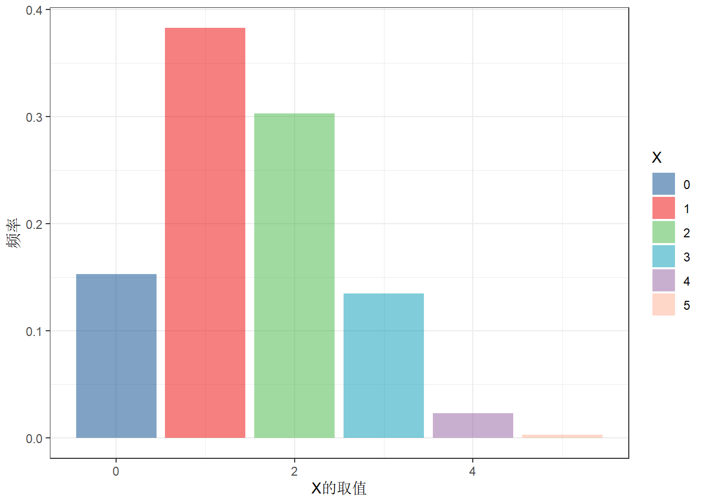
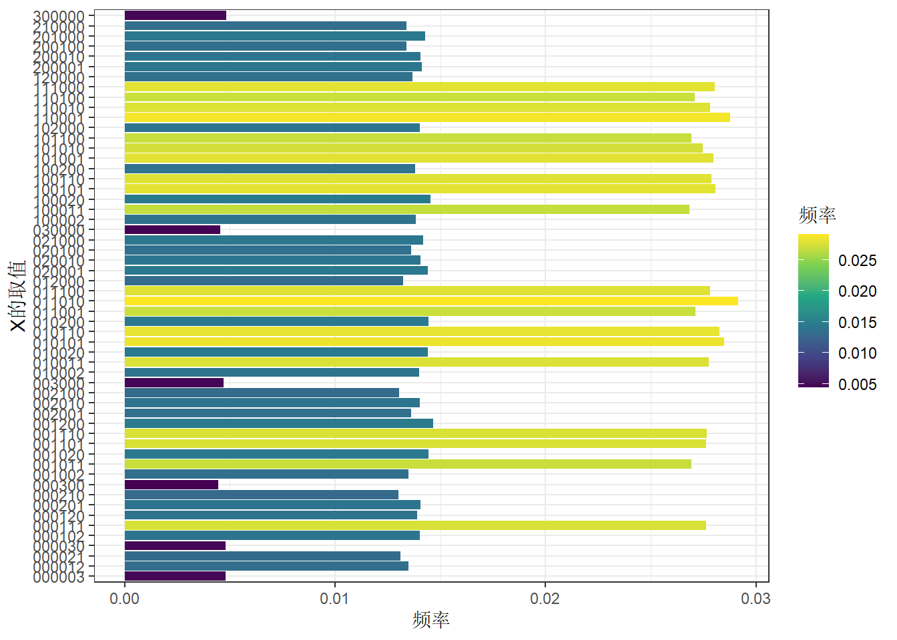
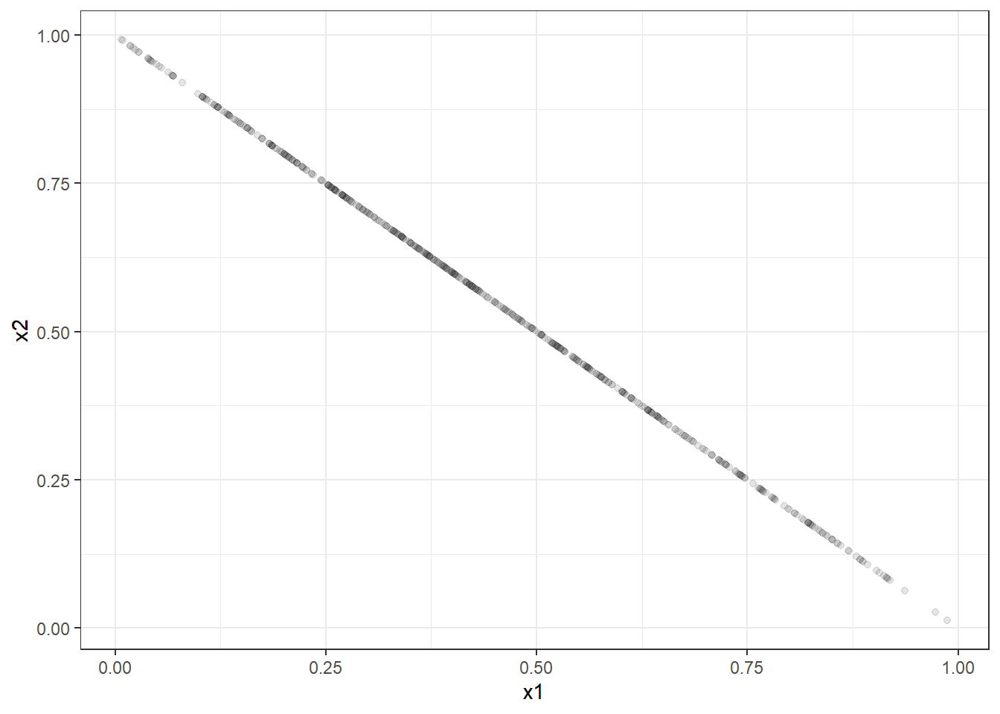

library(tidyverse)
library(gtools)
library(ggsci)22 二项分布
若记随机变量\(X\)表示: \(n\)次伯努利实验中实验成功的次数,则\(X \sim B(n,p)\)
随机变量的取值：\(0,1,...,n\)
参数： - \(n\): 试验次数 - \(p\): 伯努利实验的成功概率
概率质量函数(PMF)：
# 假设n=5,p=0.5
n=5
p=0.3
df<-data.frame(k=0:5) %>%
mutate(p=choose(n,k)*p^k*(1-p)^(n-k),
p2=dbinom(k,5,0.3))
dfggplot(df,aes(k,p,fill=factor(k)))+
geom_col()+
scale_fill_lancet(alpha = .5)+
labs(x='X的取值',y='概率',fill='X')+
theme_bw()
# 抽样模拟
data.frame(x=rbinom(1000,5,0.3)) %>% count(x) %>%
mutate(freq=n/sum(n)) %>%
ggplot(aes(x,freq,fill=factor(x)))+
geom_col()+
scale_fill_lancet(alpha = .5)+
labs(x='X的取值',y='频率',fill='X')+
theme_bw()
22.1 多项分布
多项分布（Multinomial Distribution）是多次独立实验中，每次实验有多个可能结果的一种概率分布。它是二项分布的推广，适用于每次试验有超过两个可能结果的情况。
假设进行 \(n\) 次独立试验，每次试验有 \(k\) 个可能的结果（例如，分类问题中的多个类别）。令每个试验的结果分别属于类别 \(1, 2, \dots, k\)，且每个类别的概率分别为 \(p_1, p_2, \dots, p_k\)（其中 \(p_1 + p_2 + \dots + p_k = 1\)）。
在这种情况下，记\(n\)次实验后的结果用向量\(X = (X_1, X_2, ..., X_k)\) 表示。多项分布描述的是X的分布，在 \(n\) 次试验中，各类别 \(i\) 分别被选中的次数为 \(x_i\) 同时出现的概率，其中 \(i = 1, 2, \dots, k\)，且 \(x_1 + x_2 + \dots + x_k = n\)。
22.1.1 概率质量函数（PMF）
\[ P(X_1 = x_1, X_2 = x_2, \dots, X_k = x_k) = \frac{n!}{x_1! x_2! \dots x_k!} p_1^{x_1} p_2^{x_2} \dots p_k^{x_k} \]
其中，\(X_i\) 表示类别 \(i\) 的出现次数，\(x_i\) 表示类别 \(i\) 的观察次数，且 \(x_1 + x_2 + \dots + x_k = n\)。
随机变量的取值：也即向量\(X = (X_1, X_2, ..., X_k)\)的取值，假设每个维度取值分别为 \(x_1, x_2, \dots, x_k\) ，则必须满足\(x_1 + x_2 + \dots + x_k = n\)，且每个维度取值不能为负数。
参数: - \(n\)：总的试验次数。 - \(p_1, p_2, \dots, p_k\)：每个类别的成功概率。
# 以掷骰子举例，显然k=6,若骰子均匀，则p1=p2=p3=p4=p5=p6=1/6,假设投掷3次n=3
#PMF
f1<-function(xtext){
x=as.numeric(strsplit(xtext,'')[[1]])
factorial(sum(x))/prod(factorial(x))
}
f1('123')[1] 60df<-expand.grid(x1=0:3,x2=0:3,x3=0:3,x4=0:3,x5=0:3,x6=0:3) %>%
filter(x1+x2+x3+x4+x5+x6==3) %>%
arrange(x1,x2,x3,x4,x5,x6) %>%
rowwise() %>%
mutate(x=paste0(x1,x2,x3,x4,x5,x6,collapse = ','),
n=3,
p=f1(x)*(1/6)^x1*(1/6)^x2*(1/6)^x3*(1/6)^x4*(1/6)^x5*(1/6)^x6,
p2=dmultinom(c(x1,x2,x3,x4,x5,x6),size=3,prob=rep(1/6,6))) %>%
relocate(x,n,p,p2)
sum(df$p)[1] 1df %>%
ggplot(aes(x,p,fill=p))+
geom_col()+
coord_flip()+
scale_x_discrete()+
labs(x='X的取值',y='概率',fill='概率')+
scale_fill_viridis_c()+
theme_bw()
22.1.2 抽样模拟
#抽样模拟
rmultinom(n=100000,size=3,prob=rep(1/6,6)) %>% t() %>%
as.data.frame() %>%
setNames(paste0('x',1:6)) %>%
count(x1,x2,x3,x4,x5,x6) %>%
mutate(freq=n/sum(n)) %>%
arrange(x1,x2,x3,x4,x5,x6) %>%
rowwise() %>%
mutate(x=paste0(x1,x2,x3,x4,x5,x6,collapse = ',')) %>%
relocate(x,freq) %>%
ggplot(aes(x,freq,fill=freq))+
geom_col()+
coord_flip()+
scale_fill_viridis_c()+
theme_bw()+
labs(x='X的取值',y='频率',fill='频率')
22.2 狄利克雷分布
狄利克雷分布是多维概率分布的常用先验分布，广泛用于描述离散分布的参数不确定性。其概率密度函数定义如下：
\[ \text{Dir}(\mathbf{x}; \boldsymbol{\alpha}) = \frac{1}{B(\boldsymbol{\alpha})} \prod_{i=1}^k x_i^{\alpha_i - 1} \]
其中：
\(\mathbf{x} = (x_1, x_2, \dots, x_k)\)：满足 \(x_i \geq 0\) 且 \(\sum_{i=1}^k x_i = 1\) 的概率向量。
\(\boldsymbol{\alpha} = (\alpha_1, \alpha_2, \dots, \alpha_k)\)：参数向量，\(\alpha_i > 0\)。
\(B(\boldsymbol{\alpha})\)：Beta 函数的高维推广，定义为：
\[ B(\boldsymbol{\alpha}) = \frac{\prod_{i=1}^k \Gamma(\alpha_i)}{\Gamma\left(\sum_{i=1}^k \alpha_i\right)} \]
22.2.1 性质
参数意义：
- 参数 \(\alpha_i\) 越大，类别 \(i\) 的概率越集中。
- 当所有 \(\alpha_i = 1\) 时，狄利克雷分布退化为均匀分布。
期望： \(\mathbb{E}[X_i] = \frac{\alpha_i}{\sum_{j=1}^k \alpha_j}\)
共轭性：
- 狄利克雷分布是多项分布的共轭先验。
22.2.2 与 Beta 分布的关系
Beta 分布是狄利克雷分布在二维（\(k=2\)）情况下的特例： \(\text{Beta}(x; \alpha, \beta) = \text{Dir}(x, 1-x; \alpha, \beta)\)
在 Beta 分布中，\(\alpha\) 和 \(\beta\) 控制单一维度概率的分布形态。
22.2.3 抽样模拟
df<-rdirichlet(10000,alpha=c(1,2,3,4))
head(df) [,1] [,2] [,3] [,4]
[1,] 0.04149541 0.10960605 0.4228387 0.4260599
[2,] 0.03062225 0.14512081 0.3397452 0.4845118
[3,] 0.32364962 0.07588873 0.1741911 0.4262705
[4,] 0.17873409 0.18763369 0.1884827 0.4451495
[5,] 0.07700831 0.17527859 0.2709918 0.4767213
[6,] 0.06682157 0.06536093 0.4216075 0.4462100head(rowSums(df))[1] 1 1 1 1 1 1apply(df,2,summary) [,1] [,2] [,3] [,4]
Min. 6.334401e-06 0.001119003 0.007616687 0.0266439
1st Qu. 3.145405e-02 0.107989297 0.191045220 0.2901089
Median 7.423433e-02 0.179926115 0.284194840 0.3964178
Mean 1.009026e-01 0.199450075 0.297827072 0.4018202
3rd Qu. 1.439634e-01 0.271128453 0.389624818 0.5056341
Max. 7.007667e-01 0.767930288 0.829928731 0.8956960df %>% as.data.frame() %>%
setNames(paste0('x',1:4)) %>%
pivot_longer(cols=x1:x4,names_to = 'dimension',values_to = 'value') %>%
ggplot(aes(value,fill=dimension))+
geom_density()+
scale_fill_lancet(alpha = .5)+
theme_minimal()# 贝塔分布与狄利克雷分布
df<-data.frame(x=seq(0,1,length.out=1000)) %>%
mutate(pd_beta=dbeta(x,shape1 = 1.5,shape2=2)) %>%
rowwise() %>%
mutate(pd_diri=ddirichlet(c(x,1-x),alpha = c(1.5,2)))
head(df)#PDF
ggplot(df,aes(x))+
geom_line(aes(y=pd_beta,linetype='beta',col='beta'),linewidth = 1)+
geom_line(aes(y=pd_diri,linetype='dirichlet',col='dirichlet'),linewidth = 1)+
theme_bw()+
labs(linetype='',col='',y='probability density',title='PDF')
rdirichlet(100000,alpha=c(1.5,2)) %>%
as.data.frame() %>%
setNames(paste0('x',1:2)) %>%
pivot_longer(cols=x1:x2,names_to = 'dimension',values_to = 'value') %>%
ggplot(aes(value,fill=dimension))+
geom_density()+
scale_fill_lancet(alpha = .5)+
theme_minimal()
rdirichlet(500,alpha=c(1.5,2)) %>%
as.data.frame() %>%
setNames(paste0('x',1:2)) %>%
ggplot(aes(x1,x2))+
geom_point(alpha=.1)+
theme_bw()
22.3 贝塔分布
贝塔分布是一种定义在区间 [0, 1] 上的连续概率分布，常用于表示在某些区间内的概率，如成功概率、比例或概率密度。贝塔分布在贝叶斯统计、随机过程建模等领域中有广泛应用。
贝塔分布的概率密度函数（PDF）由两个参数 \(\alpha\) 和 \(\beta\) 控制，这两个参数都必须大于零。
22.3.1 PDF
贝塔分布的概率密度函数为：
\[ f(x; \alpha, \beta) = \frac{x^{\alpha - 1} (1 - x)^{\beta - 1}}{B(\alpha, \beta)} \quad \text{对于} \quad 0 \leq x \leq 1 \]
其中：
\(\alpha>0\) 和 \(\beta>0\) 是形状参数（shape parameters）。
\(B(\alpha, \beta)\) 是 贝塔函数，用于归一化密度函数，使得其总和为 1。贝塔函数定义为：
\[ B(\alpha, \beta) = \int_0^1 x^{\alpha - 1} (1 - x)^{\beta - 1} \, dx \]
22.3.2 参数解释
- 形状参数 \(\alpha\) 和 \(\beta\)：控制分布的形状。
- \(\alpha = 1\) 和 \(\beta = 1\) 时，贝塔分布变为均匀分布，即在区间 [0, 1] 内每个值的概率相同。
- \(\alpha > \beta\) 时，分布偏向 1，表示成功的概率较高。
- \(\alpha < \beta\) 时，分布偏向 0，表示失败的概率较高。
- \(\alpha = \beta\) 时，分布是对称的，形状类似于钟形。
22.3.3 期望和方差
期望值（均值）： \[ \mathbb{E}(X) = \frac{\alpha}{\alpha + \beta} \]
方差： \[ \text{Var}(X) = \frac{\alpha \beta}{(\alpha + \beta)^2 (\alpha + \beta + 1)} \]
22.3.4 应用
- 贝叶斯统计：在贝叶斯框架下，贝塔分布常作为伯努利分布和二项分布的先验分布，尤其用于描述概率或比例的不确定性。
- 比例建模：贝塔分布常用于模型中比例或概率变量的分布，例如在估计成功率或失败率时使用
22.3.5 PDF
plot_data <- expand.grid(alpha = c(0.2,0.5,1,2,5), beta = c(0.2,0.5, 1, 2,5)) %>%
mutate(data=pmap(list(alpha,beta),~{
x=seq(0,1,length.out=1000)
data.frame(x=x,y=dbeta(x,.x,.y))
}))
plot_data %>%
unnest(data) %>%
mutate(params=sprintf('α=%s,β=%s',alpha,beta)) %>%
ggplot(aes(x,y))+
geom_line(aes(group=params,color=factor(beta))) +
facet_wrap(~alpha,nrow=1,drop = T,labeller = as_labeller(function(x)paste0('α=',x)))+
labs(color='β=')+
theme_bw()plot_data %>%
unnest(data) %>%
mutate(params=sprintf('α=%s,β=%s',alpha,beta)) %>%
ggplot(aes(x,y))+
geom_line(aes(group=params,color=factor(beta))) +
facet_wrap(~alpha,nrow=1,drop = T,labeller = as_labeller(function(x)paste0('α=',x)))+
labs(color='β=')+
theme_bw()+
coord_cartesian(ylim=c(0,10))plot_data %>%
unnest(data) %>%
mutate(params=sprintf('α=%s,β=%s',alpha,beta)) %>%
filter(alpha<1,beta<1) %>%
ggplot(aes(x,y))+
geom_line(aes(group=params,color=factor(beta))) +
facet_wrap(~alpha,nrow=1,drop = T,labeller = as_labeller(function(x)paste0('α=',x)))+
labs(color='β=',title='α<1,β<1')+
theme_bw()+
coord_cartesian(ylim=c(0,10))plot_data %>%
unnest(data) %>%
mutate(params=sprintf('α=%s,β=%s',alpha,beta)) %>%
filter(alpha>1,beta>1) %>%
ggplot(aes(x,y))+
geom_line(aes(group=params,color=factor(beta))) +
facet_wrap(~alpha,nrow=1,drop = T,labeller = as_labeller(function(x)paste0('α=',x)))+
labs(color='β=',title='α>1,β>1')+
theme_bw()+
coord_cartesian(ylim=c(0,10))plot_data %>%
unnest(data) %>%
mutate(params=sprintf('α=%s,β=%s',alpha,beta)) %>%
filter(alpha==1) %>%
ggplot(aes(x,y))+
geom_line(aes(group=params,color=factor(beta))) +
labs(color='β',title='α=1')+
theme_bw()+
coord_cartesian(ylim=c(0,10))plot_data %>%
unnest(data) %>%
mutate(params=sprintf('α=%s,β=%s',alpha,beta)) %>%
filter(beta==1) %>%
ggplot(aes(x,y))+
geom_line(aes(group=params,color=factor(alpha))) +
labs(color='α=',title='β=1')+
theme_bw()+
coord_cartesian(ylim=c(0,10))plot_data %>%
unnest(data) %>%
mutate(params=sprintf('α=%s,β=%s',alpha,beta)) %>%
filter(alpha==beta) %>%
ggplot(aes(x,y))+
geom_line(aes(group=params,color=factor(beta))) +
labs(color='α=β',title='α=β')+
theme_bw()+
coord_cartesian(ylim=c(0,10))plot_data %>%
unnest(data) %>%
mutate(params=sprintf('α=%s,β=%s',alpha,beta)) %>%
filter(alpha>beta) %>%
ggplot(aes(x,y))+
geom_line(aes(group=params,color=factor(beta))) +
facet_wrap(~alpha,nrow=1,drop = T,labeller = as_labeller(function(x)paste0('α=',x)))+
labs(color='β=',title='α>β')+
theme_bw()+
coord_cartesian(ylim=c(0,10))
plot_data %>%
unnest(data) %>%
mutate(params=sprintf('α=%s,β=%s',alpha,beta)) %>%
filter(alpha<beta) %>%
ggplot(aes(x,y))+
geom_line(aes(group=params,color=factor(beta))) +
facet_wrap(~alpha,nrow=1,drop = T,labeller = as_labeller(function(x)paste0('α=',x)))+
labs(color='β=',title='α<β')+
theme_bw()+
coord_cartesian(ylim=c(0,10))+
theme(str)22.4 伽马分布
伽马分布（Gamma distribution）是一种连续概率分布，广泛应用于统计学、工程学和其他科学领域。伽马分布是两个参数的分布，常用的参数是形状参数 \(\alpha\)（或 \(k\)）和尺度参数 \(\beta\)。
22.4.1 PDF
伽马分布的概率密度函数（PDF）为：
\[ f(x; \alpha, \beta) = \frac{x^{\alpha-1} e^{-x/\beta}}{\beta^\alpha \Gamma(\alpha)} \quad (x > 0) \]
22.4.2 参数解释
\(\alpha\) 是形状参数，决定了分布的形态。
\(\beta\) 是尺度参数，控制分布的宽度。
\(\Gamma(\alpha)\) 是伽马函数，定义为：
\[ \Gamma(\alpha) = \int_0^\infty t^{\alpha-1} e^{-t} dt \]
22.4.3 期望和方差
期望值：\(\mathbb{E}(X) = \alpha \beta\)
方差：\({Var}(X) = \alpha \beta^2\)
22.4.4 应用
- 作为等待时间模型，例如在排队理论中。
- 作为生命时间分布模型。
- 在贝叶斯统计中，伽马分布常常用作共轭先验分布。
在 R 中，可以使用
dgamma()、pgamma()、qgamma()和rgamma()函数来分别计算伽马分布的概率密度、累积概率、分位数和随机数生成。
22.4.5 PDF
plot_data <- expand.grid(alpha = c(0.2,0.5,1,2,5), beta = c(0.2,0.5, 1, 2,5)) %>%
mutate(data=pmap(list(alpha,beta),~{
x=seq(0,10,length.out=1000)
data.frame(x=x,y=dgamma(x,shape=.x,scale=.y))
}))
plot_data %>%
unnest(data) %>%
mutate(params=sprintf('α=%s(shape),β=%s(scale)',alpha,beta)) %>%
ggplot(aes(x,y))+
geom_line(aes(group=params,color=factor(beta))) +
facet_wrap(~alpha,nrow=1,drop = T,labeller = as_labeller(function(x)paste0('α=',x)))+
labs(color='β=')+
theme_bw()plot_data %>%
unnest(data) %>%
mutate(params=sprintf('α=%s,β=%s',alpha,beta)) %>%
ggplot(aes(x,y))+
geom_line(aes(group=params,color=factor(beta))) +
facet_wrap(~alpha,nrow=1,drop = T,labeller = as_labeller(function(x)paste0('α=',x)))+
labs(color='β=')+
theme_bw()+
coord_cartesian(ylim=c(0,5))plot_data %>%
unnest(data) %>%
mutate(params=sprintf('α=%s,β=%s',alpha,beta)) %>%
filter(alpha<1,beta<1) %>%
ggplot(aes(x,y))+
geom_line(aes(group=params,color=factor(beta))) +
facet_wrap(~alpha,nrow=1,drop = T,labeller = as_labeller(function(x)paste0('α=',x)))+
labs(color='β=',title='α<1,β<1')+
theme_bw()+
coord_cartesian(ylim=c(0,5))plot_data %>%
unnest(data) %>%
mutate(params=sprintf('α=%s,β=%s',alpha,beta)) %>%
filter(alpha>1,beta>1) %>%
ggplot(aes(x,y))+
geom_line(aes(group=params,color=factor(beta))) +
facet_wrap(~alpha,nrow=1,drop = T,labeller = as_labeller(function(x)paste0('α=',x)))+
labs(color='β=',title='α>1,β>1')+
theme_bw()+
coord_cartesian(ylim=c(0,5))plot_data %>%
unnest(data) %>%
mutate(params=sprintf('α=%s,β=%s',alpha,beta)) %>%
filter(alpha==1) %>%
ggplot(aes(x,y))+
geom_line(aes(group=params,color=factor(beta))) +
labs(color='β',title='α=1')+
theme_bw()+
coord_cartesian(ylim=c(0,5))plot_data %>%
unnest(data) %>%
mutate(params=sprintf('α=%s,β=%s',alpha,beta)) %>%
filter(beta==1) %>%
ggplot(aes(x,y))+
geom_line(aes(group=params,color=factor(alpha))) +
labs(color='α=',title='β=1')+
theme_bw()+
coord_cartesian(ylim=c(0,5))plot_data %>%
unnest(data) %>%
mutate(params=sprintf('α=%s,β=%s',alpha,beta)) %>%
filter(alpha==beta) %>%
ggplot(aes(x,y))+
geom_line(aes(group=params,color=factor(beta))) +
labs(color='α=β',title='α=β')+
theme_bw()+
coord_cartesian(ylim=c(0,5))plot_data %>%
unnest(data) %>%
mutate(params=sprintf('α=%s,β=%s',alpha,beta)) %>%
filter(alpha>beta) %>%
ggplot(aes(x,y))+
geom_line(aes(group=params,color=factor(beta))) +
facet_wrap(~alpha,nrow=1,drop = T,labeller = as_labeller(function(x)paste0('α=',x)))+
labs(color='β=',title='α>β')+
theme_bw()+
coord_cartesian(ylim=c(0,5))plot_data %>%
unnest(data) %>%
mutate(params=sprintf('α=%s,β=%s',alpha,beta)) %>%
filter(alpha<beta) %>%
ggplot(aes(x,y))+
geom_line(aes(group=params,color=factor(beta))) +
facet_wrap(~alpha,nrow=1,drop = T,labeller = as_labeller(function(x)paste0('α=',x)))+
labs(color='β=',title='α<β')+
theme_bw()+
coord_cartesian(ylim=c(0,5))+
theme(str)22.4.6 特例
plot_data <- expand.grid(alpha = 1, beta = c(0.2,0.5, 1, 2,5)) %>%
mutate(data=pmap(list(alpha,beta),~{
x=seq(0,10,length.out=1000)
data.frame(x=x,y=dgamma(x,shape=.x,scale=.y),
y2=dexp(x,rate=1/.y))
}))
head(plot_data %>% unnest(data))plot_data %>%
unnest(data) %>%
mutate(params=sprintf('α=1,β=%s(λ=%s)',beta,round(1/beta,2))) %>%
ggplot(aes(x,y))+
geom_line(aes(group=params,color=params)) +
labs(color='β(scale)=',title='指数分布(α=1)')+
theme_bw()plot_data <- expand.grid(k = 1:5, beta = 2) %>%
mutate(alpha=k/2) %>%
mutate(data=pmap(list(alpha,beta,k),~{
x=seq(0,10,length.out=1000)
data.frame(x=x,y=dgamma(x,..1,scale=..2),
y2=dchisq(x,..3))
}))
head(plot_data %>% unnest(data))plot_data %>%
unnest(data) %>%
mutate(params=sprintf('α=%s(k=%s),β=%s(scale),',alpha,k,beta)) %>%
ggplot(aes(x,y))+
geom_line(aes(group=params,color=params)) +
labs(color='β=',title='卡方分布(β=2)')+
theme_bw()#α很大时接近 正态分布
plot_data<-expand.grid(alpha = 1:10, beta = c(0.5, 1, 2)) %>%
mutate(data=pmap(list(alpha,beta),~{
x=seq(0,2*.x*.y,length.out=100)
data.frame(x=x,y=dgamma(x,shape=.x,scale=.y),
y2=dnorm(x,.x*.y,sqrt(.x*.y^2)))
}))
head(plot_data %>% unnest(data))plot_data %>%
unnest(data) %>%
mutate(params=sprintf('α=%s',alpha)) %>%
ggplot(aes(x,y))+
geom_line(aes(group=params,color=params)) +
facet_wrap(~beta,nrow=1,drop = T,labeller = as_labeller(function(x)paste0('beta=',x)),scales = 'free')+
labs(color='α=',title='')+
theme_bw()plot_data %>%
unnest(data) %>%
mutate(diff=y2-y) %>%
ggplot(aes(diff,fill=alpha))+
geom_density()+
facet_grid(alpha~beta)+
xlim(c(-.1,.1))Warning: Removed 325 rows containing non-finite outside the scale range
(`stat_density()`).